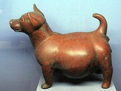

Chihuahuas descend from the Techichi dog, an ancient dog. These dogs were originally bred for companionship, religious ceremonies and rituals, and food. There is also evidence of these dogs being used for war, Aztecs bringing thousands of them into battle to forage land in front before the Aztecs would conquer it.
